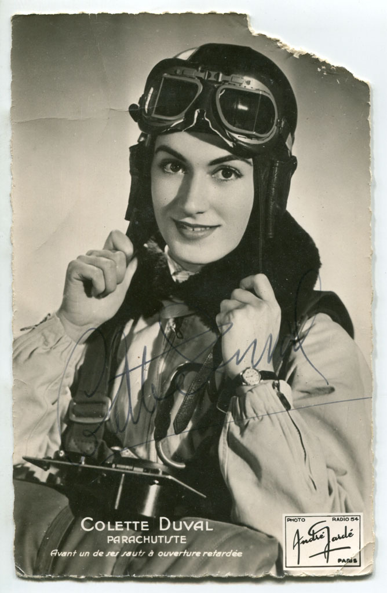
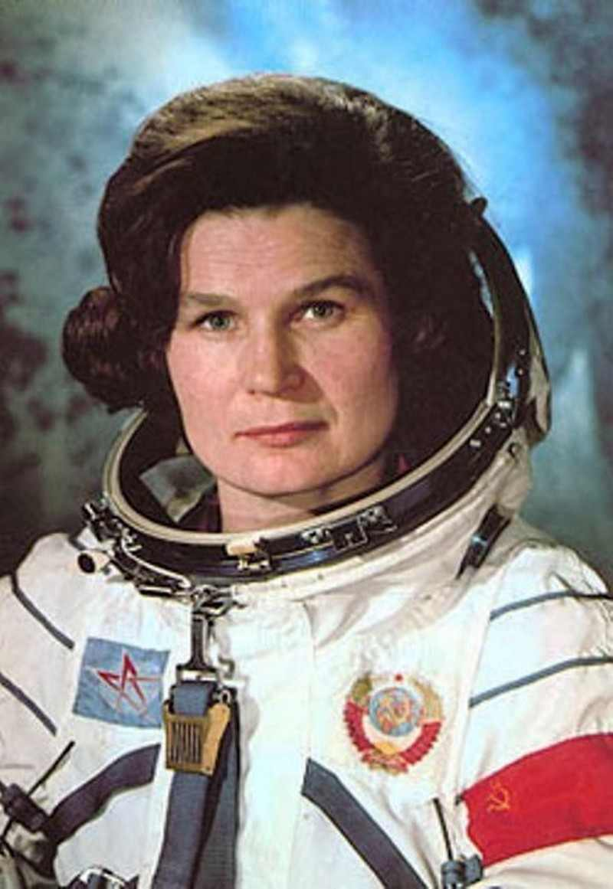

Tôi quen bà thứ nhất, tôi đã gặp bà thứ nhì trong một buổi tiếp rước bà. Còn về bà thứ ba lớn tuổi hơn cả, đã tiến trước hai bà kia trên không trung, trên con đường danh vọng, thì tôi chỉ có được ít trang tựa như nhật ký nhưng cũng đủ cho ta biết qua đời sống cùng tư cách bà ra sao.
Tôi ngạc nhiên nhận thấy rằng số phận cùng phản ứng của ba bà sao mà giống nhau thế. Cả ba cùng gan dạ mà cùng khiêm tốn, rồi khi đã thành công một cách rực rỡ và khó khăn, cả ba cùng tự nhiên nghĩ tới công ơn của thân mẫu, tỏ lòng âu yếm thân mẫu như hồi thơ ấu, mà chia xẻ vinh quang của mình với thân mẫu sau những giờ chiến đấu cực nhọc phi thường.
Bà thứ nhất tên là Tamara Koutalova, sanh ở miền Lougansk (Nga), vào năm 1943 đã đoạt được kỷ lục nhảy dù trên thế giới.
Bà thứ nhì là Colette Duval, cũng đoạt được kỷ lục đó nhưng lần này nhảy từ cao hơn nhiều, trong một thế giới đương tiến tới các vì tinh tú xa xăm.
Bà thứ ba, Valentina Terechkova, được người đời tặng cho biệt danh là “Hải Âu”. Ai mà không biết rằng bà là phụ nữ thứ nhất của Vũ trụ?
Tháng 5 năm 1934, ở Leningrad, trong đám năm chục học sinh nam nữ giỏi nhất của Viện Thể Dục, được lựa để tập sự thực hành ở tỉnh, có một thiếu nữ rất trẻ, gia thế tầm thường tên là Tamara Koutalova. Cô được Viện cử tới Lougansk.
Khi ra đi, cô nói với viên giám đốc:
- Con đi lần này phải lấy cho được bằng cấp nhảy dù.
Viêm giám đốc mỉm cười; thấy một em mơ mộng hão huyền, nói mà chẳng hiểu mình nói gì thì ai mà chẳng mỉm cười; các bạn cô cũng âu yếm trêu cô.
Tới Lougansk được bốn ngày rồi, cô vô thẳng phòng ông tham mưu trưởng chỉ huy trường và tuyên bố rằng cô muốn được nhảy dù:
Ông ta gạt đi.
- Tại sao lại không?
- Vì trong miền Donctz này đàn bà chưa ai thử nhảy dù cả, với lại cô đừng nên nghĩ tới chuyện đó thì hơn.
Nhưng ở Leningrad, đã có nhiều thanh niên nhảy dù; Tamara vẫn nằng nặc xin được nhảy dù vẻ thùy mị mà cương quyết, lại hơi ranh mảnh nữa, nên không ai nỡ trách.
Rồi một hôm cô lân la lại nói chuyện với viên trưởng phòng nhảy dù; trong câu chuyện cô nói sao đó mà viên chỉ huy hiểu lầm rằng cô đã bắt đầu luyện tập rồi, cả nhảy dù một lần rồi. Người ta bèn cho cô đi khám sức khỏe và ra lệnh cho cô nhảy.
Thấy mình bị mắc ngay vào cái bẫy chính mình đã giăng, cô hơi hoảng nhưng rất mừng rỡ.
Người ta bảo cô:
- Năm giờ lại phòng nhảy dù rồi chúng mình cùng ra phi trường.
Thế là xong, không còn nói năng gì nữa.
“Người nào mới nhảy dù lần đầu cũng hơi hồi hộp trước khi nhảy vào không trung. Có người thì cười, có người thì hút thuốc, tôi không hút thuốc, nhưng tôi nói tía lia!... Ngồi trên một cái bàn, tôi nói huyên thiên. Viên trưởng phòng định rầy tôi, nhưng một người khác can:
“Để mặc cô ấy mà...
“Tôi nói chán rồi ca hát, biết được bài nào ca hết bài đó.
“Sau cùng chúng tôi lấy một cây dù rồi lên xe ra phi trường.
“Mưa đổ. Sở khí tượng bảo rằng khoảng một giờ nữa trời sẽ quang đãng. Tôi ngồi đợi mà sốt ruột, nếu trời không tạnh thì rồi làm sao đây?
“- Lên phi cơ đi.
“Người ta đồn bậy rằng tất cả các người nhảy dù bị đuổi về hết, chỉ còn lại mình tôi được cái đặc ân nhảy hôm đó. Lời đó sai.
“Nhưng các ông huấn luyện viên còn hỏi tôi vài câu nữa: trước khi mở dù, tôi phải làm gì? Tôi lặp lại lời người ta đã dạy cho tôi, xong rồi mới ôm cây dù, leo lên phi cơ. Xin nhân tiện đây thưa rằng, lần này là lần đầu tiên nhảy dù nữa.
“Tôi tự hỏi khi phi cơ cất cánh rời khỏi mặt đất thì cái cảm giác ghê gớm sẽ ra sao. Nhưng rồi chẳng có gì ghê gớm cả, và tôi lại nghĩ bụng: có lẽ lúc lên cao, mình sẽ sơ hơn một chút.
“Độ cao: 700 thước.
Nhảy!
“Tôi trượt chân: giày tôi dính bùn vì trời mưa.
Tôi tái mặt đi vì sợ. Phi công lại giúp tôi, bảo:
“- Hãy trở vô ca-bin đi.
“- Không, để tôi nhảy.
‘’ - Một, hai, ba.
“- Tạm biệt anh, Alex!
“Tôi mỉm cười chào anh ấy. Rồi tôi nhắm mắt nghiến răng, lao mình trong không trung. Bây giờ tôi không còn nhớ lúc đó tôi đã kéo cái vòng ra sao nữa. Tôi nhìn lên cao, mọi cái đâu vào đấy cả. Lạ quá, trước khi tôi nhảy thì mưa vẫn còn đổ, mà sao
bây giờ tôi không thấy hạt mưa nào, như có cái gì che mưa cho tôi. À thì ra dù đã mở rồi, như một chiếc dù che mưa khổng lồ.
“Tôi hạ xuống một khu vườn, trong một luống khoai tây. Một chiếc xe hơi chạy tới, chứa đầy các ông xếp của tôi. Lần đầu đó tôi nhảy từ trên cao 600 thước.
“Hôm sau, cả miền Lougansk đều biết rằng trong miền đã có một thiếu nữ nhảy dù. Còn tôi, tôi đánh ngay một điện tín cho ông Giám đốc Viện thể dục của tôi. Sau đó, tôi còn có dịp được nhảy một lần nữa. Nhưng ông xếp của tôi cấm không cho tôi nhảy nữa. Mà tôi thèm nhảy muốn chết.
“Tôi tiếp tục luyện tập; ngày tháng trôi qua, và một buổi chiều nọ...
“Mười lăm giờ phi cơ cất cánh. Chúng tôi chầm chậm lên cao. Lên tới 5.000 thước thì mọi sự hoàn hảo. Lên tới khoảng 7.000 thước, tôi thấy chóng mặt, nặng đầu. Phi công giữ độ cao đó một lát cho tôi quen đã. Ông ta mang một bình dưỡng khí.
“Ông hỏi tôi:
“- Không sao chứ?
‘‘ - Không sao.
“Lên tới 7.500 thước, tôi lấy ra một tập sổ tay và một cây bút chì mà một ký giả đã đưa cho tôi để tôi ghi cảm tưởng. Tay tôi ngượng nghịu vì đeo bao tay; tôi đánh rớt cây bút chì, không muốn cúi xuống lượm. Làm thêm cử động vô ích đó làm quái gì!
“Bây giờ tới lúc ra dấu đây. Viên phi công ra dấu bảo tôi chuẩn bị sẵn sàng. Tôi đứng dậy: đáng lẽ phải bấm vào cái nút đỏ thì tôi lại bấm vào cái nút trắng.
Nút trắng: có nghĩa là tôi không mạnh mẽ, bình thường. Tôi bấm lại cái nút đỏ, nhưng nút đó không phát ra dấu hiệu. Tôi đương đứng, bao tay đã cởi bỏ rồi, sẵn sàng để nhảy, mà tôi không nhận ra rằng dấu hiệu tôi phát ra có nghĩa là “không êm rồi”. Sau cùng tôi thấy hai ngọn đèn cùng cháy lên và tôi đứng lên cái nắp, nó bật ra, thế là tôi văng ra ngoài.
“Tôi bị không khí lật nhào, quay lộn bốn vòng. Rồi tôi nắm cái vòng mà kéo. Tôi ngó: sao cây dù của tôi không mở ra này. Nhưng tôi sực nhớ ra rằng nhiều người đã nhảy trước tôi đã nhận thấy, lên cao, không khí loãng quá thì dù mở rất chậm. Quả nhiên chiếc dù của tôi lần lần mở ra. Phi cơ lượn chung quanh tôi. Tôi đưa tay vẫy vẫy. Đầu tôi sao nặng thế, tôi bị lắc dữ dội, nhưng chỉ một chút sau tôi vô một miền không khí yên lặng hơn. Khi xuống tới độ 6.500 hay 7.000 thước, tôi muốn hát bài: “Cánh tung rồi, bay đi, phi công!”.
“Nhưng tôi hát không thành tiếng. Thôi, nghỉ.
“Tôi thấy viên phi công và Lipovka ra dấu cho tôi. Tôi nghĩ bụng phải làm dấu đáp họ. Tôi vẫy tay để đáp viên phi công; còn để đáp Lipovka thì tôi co chân rồi duỗi chân. Mấy cử động làm cho tôi mau mệt. Mặt đất còn ở dưới xa. Khi tôi còn ở trên cao,
tôi muốn đưa ngón tay út lên chọc trời, nhưng làm sao đụng tới trời được. Mặt trời to tướng làm chóa mắt tôi. Mặt làn sương che khuất mặt đất.
“Tôi lột bỏ chiếc nón, cởi vài cái nút áo cho thoải mái - hôm sau mới thấy tai hại là tôi bị cảm hàn nặng. Từ lúc xuống tới 6.000 thước, tôi thấy dễ chịu, vui vẻ. Xuống gần tới 1.000 thước tôi tìm chỗ để hạ; dưới chân tôi là một làng xóm, trên con đường cái chạy qua giữa làng, tôi thấy một chiếc xe hơi đương lăn, rồi tới mấy chiếc xe khác chở
các ông xếp của tôi, các phóng viên báo chí, ủy ban v.v... Tôi suy nghĩ xem nên hạ ở đâu. Trên một cái nhà hay trên một giòng suối nhỏ. Tôi lướt xuống, tránh xóm làng là tôi hạ xuống một luống dưa. Nhưng tôi phải ra dấu cho phi công hiểu rằng mọi sự như ý. Đã định trước với nhau rồi: hễ không có gì trục trặc thì tôi nằm xuống thành hình chữ T, trái lại thì nằm theo hình chữ thập. Nhưng loay hoay mãi không làm được gì cả. Sau cùng rán làm được thành chữ T. Vài thiếu nữ lại hỏi tôi:
‘‘ -Dì ở đâu tới thế?
‘‘ - Ở trên trời xuống!
“Mấy thiếu nữ khác cũng chạy lại:
“- Từ trên cao bao nhiêu thước?
“Tôi đâu có biết. Có lẽ là 8.000 thước hoặc 7.500 thước. Họ bồng tôi lên, công kênh tôi lên.
Tôi la:
" - Đừng quên cây dù nhé!
" - Tôi cởi bộ áo dù lót bằng lông của tôi. Chúng tôi vô làng, tôi leo lên một chiếc xe hơi. Những người trong “Kolkhoze”(1) có mặt ở đó, thấy người ta đón tôi về liền, họ bất bình vì muốn được nhìn tôi một lát nữa.
“Viên đoàn trưởng lái xe đưa tôi về. Viên đại diện tờ Pravda cũng muốn lên xe:
" - Đồng chí đoàn trưởng cho phép tôi nhé?
Rồi anh ta quay lại hỏi tôi:
" - Cô sinh trưởng ở đâu?
“Tôi đáp. Ông ta tặng tôi kẹo. Khi hạ xuống mặt đất, tôi buồn ngủ, bây giờ gió mát, tôi tỉnh táo lại.
“Người ta kiểm soát kỹ lưỡng rồi, cho tôi hay rằng tôi đã nhảy từ trên cao 7.750 thước. Bữa tối hôm đó tôi chỉ ăn mỗi một miếng cá mòi. Sau khi cám ơn các nhà cầm quyền trong miền chúng tôi lên phi cơ về Leningrad. Tại phi trường lại có một đám ký giả nữa.
“Sau khi nhảy dù lần đầu tiên ở Longansk, tôi gởi một bức thơ cho Má tôi kể rõ đầu đuôi cho người nghe.
“Người trả lời tôi liền:
“- Sao con điên đấy hả? Con gái của mẹ, đương hơ hớ tuổi xuân mà đã chán đời, không muốn sống nữa ư?
“Tôi nghĩ rằng không làm cách nào cho Má tôi thay đổi ý kiến được, nên đáp:
“- Xin Má cứ yên tâm. Chẳng nguy hiểm chút nào cả.
“Để cho người yên tâm, tôi viết thêm rằng các y sĩ đã cấm tôi nhảy dù và tôi sẽ không nhảy dù nữa. Từ đó trở đi, chúng tôi vẫn gởi thơ cho nhau nhưng chẳng có chuyện gì lạ rồi bỗng nhiên mọi sự thay đổi.
“Người viết cho tôi: con là một nữ kiệt, nữ kiệt của Má, con nhảy dù, con lại đạp xe đạp nữa, con làm được chuyện này chuyện nọ.
“Tôi đọc bức thư đó mà chẳng hiểu đầu đuôi ra sao cả, nhưng các chị bạn của tôi viết thư giảng cho tôi rằng một biến cố lớn lao đã xảy ra trong thị trấn chúng tôi. Một chiếc khí cầu không biết từ Moscou hay Leningrad bay tới rồi hạ đúng xuống khu ngoại ô của chúng tôi. Mấy phi công hôm sau mới đi, chở khí cầu trước lên xe lửa. Má tôi trông coi nhà ăn uống ở ga, mời họ về nhà chúng tôi nghỉ đêm. Biết họ là phi công nên người hỏi họ nhảy dù là thế nào. Và một phi công bảo người rằng phải là hạng anh hùng mới nhảy dù được. Thế là tôi thành một nữ anh hùng, cả trong mắt của má tôi nữa.
“Má tôi đã đọc một bài báo thấy người ta bảo rằng “Tamara Koutalova là một trong những người nhảy dù nổi danh nhất”. Người cắt bài đó gời cho tôi: “Này coi nè, người ta khen con nè!”.
“Từ đó người tiếp tục cắt gởi cho tôi những bài báo người được đọc, tưởng như tôi ở giữa khu rừng hoang, không được tin tức gì ở bên ngoài cả.
Khi người nhận được điện tín tôi cho hay mới đoạt được kỷ lục trên thế giới, người trả lời tôi liền:
“Giỏi! Con thành công, cả nhà mừng lắm!”.
“Từ đó, người chỉ mong tôi nhảy dù nhiều hơn nữa và từ trên cao hơn nữa! Người lo sợ cho tôi, nhưng lòng người như vậy đấy...”.
Cách đây đã nhiều năm, tôi gặp Colette Duval trong một nhà may đồ “mốt”. Lúc đó bà chỉ là một người để làm kiểu, nhưng đã có tiếng tăm về nhảy dù.
Nhưng sở dĩ tôi biết bà là nhờ con gái của tôi Edwige; cháu mới được bằng cấp nhảy dù và thường gặp bà trên sân tập. Hai người có thiện cảm với nhau.
Tôi thấy Colette Duval rất đẹp, đa cảm, thông minh và thẳng thắn, về sau bà tỏ ra có nghị lực và gan dạ phi thường.
Bà bỏ nghề thứ nhất mà vô nghề hàng không, cứ mỗi giai đoạn lại đánh dấu một thành công mới.

Và sau khi vượt được biết bao trở ngại, khó khăn mọi thứ, ở Rio-de-Janeiro, bà đoạt được kỷ lục nhảy không dù.(2)
Tờ Marie-Claire đăng bài tường thuật kỳ công không tiền đó và Colette Duval đã cắt bài báo gởi về cho mẫu thân.
Xét bề ngoài thì không thể nào so sánh kỷ lục này của Colette Duval với kỷ lục hai chục năm trước cúa Tamara Koutalova, nhưng sự thực thì cả hai bà đều can đảm, có ý chí sắt đá “quyết làm cho được” như nhau.
“... Tôi rớt xuống, chậm hơn, có lẽ là do không khí đặc hơn, một người nhảy dù từ trên không mà như một người bơi lội, cảm thấy mình vùng vẫy trong không khí như trong nước, thì cũng lạ thật.
Mỗi lúc tôi thấy một lạnh hơn, ngón tay của tôi tê cóng, không còn cảm giác gì nữa. Tôi coi đồng hồ đo độ cao: 5.000 thước, và bỗng tôi thấy đau nhói trong tai, mỗi lúc mỗi đau hơn... Đau quá chịu không nổi. Tôi hét lên, như vậy thấy dễ chịu, vì làm cho sức ép ở tai trong và tai ngoài thăng bằng với nhau. Tôi cũng nuốt không khí nữa như người ta đã chỉ cho tôi. Như vậy cũng dễ chịu được một chút, nhưng không biết tôi còn chịu đựng được bao lâu nữa. Đau và lạnh thấy ứa nước mắt.
“4.000 thước. Nước mắt làm nhòa cả cặp kính, tôi sắp phải liệng bỏ nó đi, nhưng tay tôi vừa mới cử động thì tôi đã mất thăng bằng mà quay tròn trong không trung.
“2.500 thước. Còn đau hơn nữa, tôi chịu đựng được không?
“1.500 thước. Tôi sẵn sàng để mở dù.
“Tôi kéo hai cánh tay vô, đặt bàn tay lên mặt tay cầm. Nếu đau quá chịu không nổi thì tôi sẽ mở dù trước khi ngất đi. Một giây nữa, lại một giây nữa, 318 thước. Đợi thêm một giây nữa. Tôi mở dù.
“Khích động mạnh, nhưng tôi đã quen rồi. Cây dù mở ra, tôi hạ từ từ xuống biển. Tôi thấy mấy chiếc tàu tiến lại phía tôi, nhưng còn ở xa lắm, nhỏ xíu... Chiếc đồng hồ của tôi mà do thói quen, tôi cho ngưng chạy mỗi khi nào mở dù, lúc đó chỉ ba phút mười tám giây. Ba phút mười tám giây nhảy không dù! Nếu tàu tới kịp thì tôi sẽ đoạt kỷ lục trên thế giới về nhảy không dù.
“Tôi rán mở móc gài ra, nhưng vì lạnh quá, các ngón tay của tôi tê cóng, không cảm thấy gì hết, nên mở móc không được. May quá, tôi đã xuống gần mặt nước rồi, tôi kéo hai sợi dây cho cái maewest(3) phồng lên và hai giây sau tôi hạ xuống mặt nước.
Cây dù còn phồng được một lát rồi xẹp xuống và chìm. Tôi một mình ở giữa biển, cách bờ mươi cây số, sóng bủa chung quanh hơi cao, che khuất mấy chiếc tàu tôi thấy lúc nãy. Họ có thấy tôi không?
Tôi xé cái bao đựng thuốc màu để báo hiệu. Ngoài công dụng đó, nó còn công dụng nữa là ngăn cá mập lại gần tôi, theo nguyên tắc thì vậy.
“Phi cơ của trung úy Barbosa đã kiếm thấy tôi và đương đập cánh; một phút sau chiếc trực thăng đã lượn trên đầu tôi và coi chừng tôi. Thật là vững bụng. Quần áo tôi phồng nước và hóa nặng. Chiếc dù mỗi phút một chìm xuống và tôi ngại sẽ bị nó lôi xuống đáy biển nếu tàu không tới kịp để vớt tôi.
Nhưng tàu đã tới kia rồi. Họ đã thấy tôi, rồi lại sát tôi. Mấy cánh tay lực lưỡng nắm lấy tôi, kéo tôi lên.
“Tôi mệt lử, sung sướng. Tôi đã thành công!”.
“Má ơi, má là người đầu tiên con kể cho nghe những chi tiết về kỷ lục con đoạt được đây. Xong rồi, vâng, con đoạt được kỷ lục rồi: 34.000 “bộ”(4), mà có thể còn hơn vậy nữa, vì các kỹ thuật gia của bộ bảo rằng, ở trên cao như vậy, các đồng hồ đo độ cao thường cho một con số hơi thấp hơn sự thực, còn phải tính lại cho đích xác; mà các kỹ thuật gia ở viện Hàng không - học biết các qui tắc sửa lại cho đúng, tùy theo độ lạnh và sức ép của không khí.
“Má ạ, con phải khó nhọc biết bao, vận động, lo lắng, thất vọng rồi mới thành công như vậy đấy. Cái thuật nhảy dù này cũng gần như việc viết kịch vậy, phải có tài để viết được một vở kịch hay rồi lại phải có thiên tài để diễn cho hay nữa. Má còn nhớ ông bộ trưởng sực nức dầu thơm đó không, ông ấy tiếp con trong phòng giấy mà như tiếp khách trong sa lông vậy. Ông khen con mà con cứ phớt tỉnh, chắc ông ta không thích (...). Nhà chuyên môn về hàng không đó, khi lãnh trách nhiệm về hàng không của quốc gia, chắc đã quên rằng nghề hàng không đâu phải là nghề bá láp.
“Ông ta bảo con còn có nhiều việc khác phải làm hơn là cái việc nhảy không dù đó. “Một người làm kiểu trong một nhà may “đồ mốt” mà muốn lên cao như vậy, thật không sao ngờ được, thưa cô...!”.
“Dạ thưa ngài bộ trưởng, xin ngài tha thứ cho tôi đã không xin phép ngài trước, nhưng tôi đã lên cao như vậy đấy.
“Má thấy không, khi mình quyết tâm thực hiện một việc gì thì có một sức ki dị làm cho mình quên hết những cái nhỏ nhen mình phải chịu đựng đi. Nụ cười của thầy ký làm bộ ta đây, những đơn xin làm đủ năm bản, những lời từ chối lễ độ... rồi cả trăm thứ khác nữa; cả những nụ cười tinh quái, mỉa mai của các vị anh hùng chính thức nữa...
“Tối nay con không muốn chua chát, nhưng con buồn má ạ. Vậy mà mấy ngày nay phép mầu đã xảy ra rồi đấy, và con chỉ nhớ tới các bạn Brésil của con thôi, các bạn đó đã đem kiến thức khoa học, cách tổ chức âu yếm và tỉ mỉ của họ để phục vụ nước ‘’Pháp - Zinha” như các bạn ấy nói.
“Phòng của con bây giờ tĩnh mịch và con nghĩ tới những bạn đã giúp con thực hiện cái mộng đó, không nhờ họ thì con đã chẳng làm được gì cả...
“Má ạ, bây giờ con đi ngủ đây, con bình tĩnh rồi, con có nhiều kỷ niệm, hy vọng và nhiệt tâm con đã thắng được các thành kiến, sự sợ sệt, sự lãnh đạm và ác ý. Con đã làm cho đời sống của con có giá trị trở lại. Năm nay con hai mươi lăm tuổi”.
Tôi đã được gặp “Hải âu” trong một cuộc tiếp rước chính thức khi bà ghé Paris. Như cả triệu khán giả khác, tôi đã được coi bà bình tĩnh đáp cuộc phỏng vấn trên màn ảnh truyền hình, cho biết cảm tưởng của bà về Vũ Trụ, về thời trang của phụ nữ Paris, trả lời cả những câu hỏi về hôn nhân, con cái của bà nữa.
Người ta phục thái độ cùng tinh thần thức thời của bà, nhất là cái duyên dáng quyến rũ, tinh thần hài hước của bà càng làm cho các câu trả lời của bà có ý vị bất ngờ.
Không một người đàn bà nào có đủ những đức tính như bà về phương diện nghề nghiệp cũng như về phương diện làm vợ, làm mẹ.
Bà đã phục vụ khoa học mà bước vào lịch sử nhân loại với cái hào quang của các anh hùng trong các truyền kỳ; thật là kỳ dị, bà có đủ các tài năng thiên phú của các vị anh hùng đó.

Chồng bà, ông Andrien Nikolaiev cùng đi với bà. Trên chiếc áo trắng của bà cài ngôi Sao vàng, dấu hiệu của những nhà thám hiểm không gian. Bà đã mỉm cười một cách tự nhiên, giản dị mà ung dung lãnh giải thưởng Galabert năm 1965.
Ông Galabert, người thành lập giải thưởng quốc tế thám hiểm không gian đó, chào mừng hai ông bà như sau:
“Valentina Terechkova và Andrien Nikolaiev sau khi chinh phục vũ trụ, bây giờ lại chinh phục được Paris và dân tộc Pháp nữa. Không ai chống lại được cái duyên của hai ông bà và tất cả những người có tinh thần trẻ trung ở xứ này, từ mười tới tám mươi tuổi đều ngưỡng mộ ông bà...
“Hai ông bà với lệnh ái sẽ làm cho những kẻ lạc hậu nhất ở trên địa cầu này cũng phải thích sự thám hiểm vũ trụ...”.
Nhưng muốn biết rõ đời sống, lý tưởng của “Hải Âu” thì phải đọc những câu chuyện mà D. Vassiliev đã thu thập được.
“... Tôi không nhớ được gì về thân phụ tôi cả. Tôi mới hai tuổi thì người đi quân dịch, rồi không trở về nữa. Chúng tôi chỉ còn giữ một tờ giấy vàng khè vì cất giữ gần một phần tư thế kỷ rồi, trên đó có ghi như vầy: ‘‘... quân nhân Terechkov Vladimir Alexeievith trong đạo Hồng quân, đã chiến đấu cho tổ quốc, giữ trọn được lời thề của quân nhân, mà tỏ ra anh dũng và can đảm, hy sinh cho tổ quốc ngày 25 tháng giêng năm 1940. Đã được chôn cất với tất cả nghi lễ trong quân đội”.
Hồi đó chúng tôi ở tại làng Maslennikovo, nơi tôi sanh ngày mùng 6 tháng 3 năm 1937; làng đó cách Yaroslavl khoảng 35 cây số. Ba tôi mất đi để lại cho má tôi ba đứa con nhỏ còn bồng trên tay. Chị Liouda lớn hơn tôi một chút, em Volodia nhỏ hơn tôi. Đời sống thực khó khăn. Chắc ông đã coi bức họa La Troika (5) của V. Perov chứ. Bức đó vẽ cảnh bão tuyết mùa đông. Ba đứa nhỏ kéo một cái xe trượt tuyết trên đặt một thùng nước. Gió lạnh như cắt, quất vào mặt chúng, làm cho chúng lảo đảo, mà chúng vẫn cố tiến bước, kéo chiếc xe nặng như vậy.
“Tôi cũng vậy, mỗi khi nhắm mắt lại thì cơ hồ như thấy ngay chiếc xe nhỏ troika của tôi.
Thời đó đương có chiến tranh. Má tôi làm việc ở ngoài đồng và chị em chúng tôi đang mang bữa ăn ra cho người. Những trận bão tuyết không làm cho chúng tôi ngại bằng
ánh nắng gay gắt trên mộng lúa mênh mông bát ngát. Nắng như thiêu, không có một ngọn gió, không khí ngột ngạt. Mà phải đi hoài, đi hoài cho tới đồng cỏ.
“Sau má tôi làm việc trong trại. Chúng tôi giúp đỡ người được gì đây? Đôi khi chúng tôi vác cỏ giùm người, đem cho bò ăn, bó cỏ thì nặng mà vai thì mảnh khảnh. Thức ăn thiếu thốn; chỉ toàn là khoai tây. Nói cho đúng thì kolkhoze(6) cũng thỉnh thoảng cấp cho chúng tôi một hai lít sữa. Bà con hàng xóm cũng không quên chúng tôi, trông nhà
hoặc cuốc vườn giùm cho...
“Thời gian trôi qua... Chị tôi, em tôi và tôi bắt đầu làm việc ở Krasnyi Perekop. Chị Liouda làm thợ dệt; còn tôi, tôi quấn băng bằng máy để gởi lại một xướng khác...”.
Mấy năm như vậy rồi tới năm 1959, Valentina lại Moscou: tới đây cô đã qua được một quãng đường dài. Tháng năm năm đó cô bắt đầu nhảy dù.
“Chẳng bao lâu sân bay đã trở thành như căn nhà thứ nhì của tôi. Sáng sớm ra đó để học lý thuyết và môn thực tập mỗi ngày một khó: nhảy xuống nước, nhảy hai ba cách liên tiếp v.v...”.
Và bây giờ đây, cô cùng với mẹ ngồi xe lửa lên Moscou để được huấn luyện trong đoàn thám hiểm không gian.
Tôi đã bắt đầu tập: tôi bị đặt vào trong một cái máy quay li-tâm, tôi bị đảo lộn đủ chiều, bị thử trong phòng nóng, tôi chạy nhảy, tập thể dục... và luôn luôn người ta coi tim tôi có mạnh không. Mạnh, nó chịu đựng được!
“Sau trắc nghiệm cuối cùng, nghe ủy ban bảo “được”, tôi biết rằng mình có thể thành nhà thám hiểm không gian”.
Nhưng trong thời gian đó, không phải chỉ toàn là gắng sức, kiên nhẫn, tự chủ. Cũng có những lúc cô được nghỉ ngơi và chúng ta nên đọc kỹ những hàng dưới đây:
“Buổi tối đó tôi rất xúc động mà trời lại mát mẻ nên tôi đã lang thang dạo phố tới quá nửa đêm. Tôi đi với một chị bạn cũng được tuyển như tôi (sau này sẽ thay thế tôi). Hai chị em chúng tôi ngừng lại một lúc lâu trước tượng thi hào Pouchkine; Gagarine và Titov cũng y hẹn lại đó, và ngay từ buổi đầu, chúng tôi đã muốn theo truyền thống của các nhà thám hiểm không gian!
“Tôi được nhận vô đoàn không gian gồm các y sĩ, kỹ sư, giáo sư, các bạn và các xếp của tôi. Tôi làm quen với Gagarine, Titov, Nikolaiev Popovitch và Bykovski, bạn cùng bay với tôi sau này. Chẳng bao lâu những anh đó thành những bạn thân nhất của tôi; các anh kể chuyện học hành, luyện tập và kinh nghiệm bay, cho tôi nghe.
“Lại tiếp tục học và luyện tập nữa. Dĩ nhiên, đối với chị bạn thay thế tôi và tôi, người ta đã dễ dãi một chút, giảm bớt tiêu chuẩn về thể chất cho, nhưng không bao nhiêu. Ngay từ buổi đầu, người ta đã khuyên tôi phải tập chạy cho nhiều vào để cho tim và các bắp thịt quen chịu mệt nhọc.
“Rồi tới nhảy dù. Tôi lại tập nhảy, nhưng dưới sự hướng dẫn của một huấn luyện viên ‘ ‘‘bực thầy về thể thao”, rất khó tính. Nhảy mà chỉ được “hạng trung” thôi thì không khi nào ông bằng lòng. Ông bảo tôi: “Nhảy lại đi, phải làm sao có cảm giác rằng ở trong không khí mà cũng như ở trong nước thì mới được. Phải can trường thêm nữa, hùng dũng như đàn ông, có nam tính hơn nữa!”.
“Nam tính! Tiếng đó thật quan trọng. Mới đầu tôi cho là ngược đời, tôi là đàn bà mà buộc tôi có nam tính, nhưng sau tôi hiểu ra. Tôi nhảy thật nhiều và rốt cuộc đạt được cái kỹ thuật rất vững vàng của một nhà thể thao có hạng.
“Chúng tôi cũng đọc sách nhiều. Ngoài các tác giả tôi thích: Lermontov, Prichvine, Gorki, Cholokov, Ostrovski, Fedine, Maiakovski, Blok, Essinine, Tvardovski, tôi đọc thêm các tác giả viết về nghề của tôi: Tsiolkavski và Zander. Cũng như trong các lần đi thăm Bykovski, Popovitch và Gagarine, chúng tôi hễ họp nhau là thường bàn bạc về văn chương và nghệ thuật.
“Cuộc đời của tôi lúc đó thật phong phú, ngày nào cũng biện luận về các ý mới mẻ; tôi gia nhập hoàn toàn vào tập thể thám hiểm không gian.
“Trong các môn luyện tập, tôi cho môn tập chịu đựng trong máy quay li-tâm là khó nhất. Điều đó dễ hiểu: tôi chưa hề ngồi trong một phi cơ khu trục, nên chưa quen chịu cảnh tốc độ tăng lên thình lình và quá mức. Để thắng nhược điểm đó, tôi phải bay
thật nhiều. Tôi phải nói vậy vì có người hiểu lầm rằng có thể thám hiểm không gian mà không cần qua giai đoạn trung gian là hàng không. Hiện nay thì không thể như vậy được: khó mà điều khiển một “con tàu không gian” nếu không có những phản ứng
mau lẹ của một phi công.
“Sau cùng tôi đã thắng được hết thảy: tôi đã quen mọi sự gia tăng tốc độ, quen chịu các nhiệt độ cao, các áp lực thấp của không khí, quen sự rung động, quen sự yên lặng trong cái ca-bin cách biệt.
“Không phải là không khó khăn đâu, nhưng khó khăn tới mấy cũng không làm cho tôi nản chí. Chỉ cần có đức kiên nhẫn vô biên và tôi nghĩ rằng phụ nữ chúng ta kiên nhẫn hơn là người ta tưởng.
“Tôi với chị thay thế tôi về Yaroslav lần thứ nhất để thăm má tôi. Người ngạc nhiên sao tôi không rủ các bạn khác về, các bạn mà trong thư gởi cho người tôi thường nhắc tới nhưng không gọi tên. Vì nếu tôi dắt Youri, Guerman, Andrian về thì người sẽ nhận ra liền là ai và đoán được đời của con gái người ở Moscou ra sao.
“Rồi cái ngày nghiêm trọng đó tới. Người ta phát cho tôi và chị thay thế tôi mỗi người một bộ áo lặn nước. Tôi thấy bộ áo đó đẹp, may riêng cho bọn thám hiểm không gian “phụ nữ” chúng tôi, có một con bồ câu trắng đính ở ngực. Bận vào rồi, chúng tôi nhìn nhau mà cười; “Giá đi dự cuộc khiêu vũ bằng bộ này thì hay nhỉ...”.
“Tới bực cửa ca-bin, tôi ngó lại một lần nữa các bạn trai, đưa tay vẫy họ, tay nặng trịch vì bộ áo lặn nước.
“Cánh cửa lặng lẽ khép lại, tôi mất hết liên lạc với phía bên ngoài. Tôi nghe giọng nói ôn tồn từ phòng chỉ huy truyền tới, người ta hỏi thăm sức khỏe của tôi. Tôi đáp: “tốt đẹp cả”. Người ta cười bảo: “Còn chúng tôi thì cảm thấy không tốt đẹp gì lắm. Nóng quá chừng. Nhất là chúng tôi ở lại nhà”.
“Đúng 12 giờ trưa, người ta báo rằng ba mươi phút nữa sẽ bay. Do cảm xúc chứ không phải do trí tuệ mà tôi nghe thấy cái tiếng mong đợi từ bao lâu đó: “Khởi hành!”.
“Tôi may mắn thật: khi tôi ra khởi quỹ đạo thì địa cầu, tại nhiều chỗ không có mây: tôi nhìn thấy nó có màu sắc rất đẹp; ruộng lúa có màu ngọc bích, rừng thì phủ một màu lam nhạt, sông rạch thì như những làn chóp xanh dương, đỉnh núi lấp lánh và chân trời như một cầu vồng in lên bờ bầu trời đen ngòm coi thật lạ lùng.
Các màu lam, thanh thiên, da cam đậm, vàng lợt, xanh lá cây phơn phớt, chuyển từ màu nọ qua màu kia một cách nhẹ nhàng, tuần tự, như hòa lẫn vào nhau. Ban ngày, bất kể giờ nào, địa cầu của chúng ta cũng đẹp, ban đêm tôi thấy những đốm sáng lóng lánh như giọt sương; những nơi đó là các châu thành. Ánh sáng làm cho tôi phân biệt được cả những con đường và công trường lớn.
Trái đất, quê hương của nhân loại ấy, ra khỏi bóng tối như bắt đầu ra đời dưới mắt tôi. Nó trẻ trung rực rỡ, được mưa gội, gió vuốt. Có vài đám mây lơ lửng sao mà thấy gần thế, có vẻ trần tục thế.
“Ngày và đêm, năm châu như những con chim ấp trứng - trứng đây là các đảo - trôi qua cửa ca- bin của tôi. Tôi chăm chú nhận xét mọi vật chung quanh.
“Sự liên lạc bằng vô tuyến điện thật hoàn hảo. Tiếng nói của địa cầu với tiếng nói của Valeri – anh cũng đương quay chung quanh Địa cầu với tôi - vang lên như ở phòng bên cạnh vậy.
“Ngày bay thứ nhất tôi nhận được tin tức của các bạn thám hiểm không gian. Lời nói của Popovitch cho tôi cảm giác rằng anh ở gần lắm. Và đây là những phút không sao quên được. Tôi bay lên miền núi Volga, trên quê hương Yaroslavl của tôi. Dĩ nhiên bay cao như vậy thì không thể thấy hết từng chi tiết một được. Nhưng vừa mới thấy con đường xanh lam ngòng ngoèo ở giữa các đám mây là trong óc tôi tướng tượng ra ngay những ngôi nhà ở Yaroslavl đương soi bóng xuống nước và xóm Maslennikovo của tôi với căn nhà chìm dưới tàn anh đào do má tôi trồng. Tôi cầu nguyện Địa cầu truyền tin cho má tôi để người khỏi lo.
“Kìa, có tiếng người chỉ huy cuộc bay: ông ra lệnh đáp xuống. Tôi vừa mới đánh điện tín xong, cho biết những nhận xét cuối cùng của tôi. Chúng tôi còn đủ nước uống, thức ăn, nhất là đủ sức khỏe và nghị lực để bay lâu hơn nữa. Nhưng chương trình đã định rồi, đã thực hiện xong cả rồi.
“Valeri bảo tôi: Đáp xuống bình an nhé, Valioucha. Chúng mình gặp nhau ở dưới địa cầu”.
“Tôi đáp xuống trước nhất. Mãi sau này tôi mới hiểu tại sao anh lo lắng cho tôi khi tôi bắt đầu hạ. Anh hỏi luôn miệng: “Hải Âu ra sao?”.
“Nhiều người chạy lại phía tôi. Bao vây tôi. Ôm hôn tôi. Chung quanh là một khoảng mênh mông, trên đầu là bầu trời mênh mông. Vậy mà tôi chưa thỏa. Tôi muốn ôm hết thảy, ghì hết thảy vào lòng. Có lẽ lần đó là lần đầu tiên tôi khát khao muốn ôm hết mọi người, ôm má tôi, ôm Địa cầu”.
Tamara Koutalova, Colette Duval, Valentina Terechkova đều tượng trưng cho ba cái này: một sự thắng lợi tiếp tục trong ba chục năm nay, được ghi vào lịch sử phụ nữ; - sự tấn bộ của khoa học đưa tới những thay đổi làm cho ta kinh ngạc; - sự tấn bộ của phụ nữ, từ nay không còn tự hỏi tại sao ganh đua được với đàn ông nữa mà đã hiên ngang tiến bên cạnh đàn ông một cách chững chạc, đã thắng được mọi mặc cảm cùng thành kiến, mà vẫn giữ được nữ tính của họ.
Hai nữ sĩ viết về Trung Hoa nổi danh nhất và hiện còn đang sống cả là Pearl Buck, hoàn toàn gốc Huê Kỳ, tác giả các truyện: La Terre Chinoise, Vent d’Est vent d’Ouest, La mère, Le patriote, Pavilion de Femmes... và Han Suyin, lai Trung Hoa và Bỉ, tác giả các cuốn Multiple Splendeur, Destination Tchoungking, L’arbre blessé, Un été sans oiseaux...
Chú thích:
(1) Nông trường tập thể ở Nga.
(2) Chute libre: nghĩa là đợi khi rớt xuống gần tới đất mới mở dù
(3) Có lẽ là một thứ phao.
(4) Xe trượt tuyết ở Nga, có ba con ngựa kéo.
(4) Pied: thứ thước đo ngày xưa, dài 324 li.
Bộ Anh: ngắn hơn một chút, khoảng 305.
(6) Nông trại tập thể ở Nga, có tính cách Cộng sản.